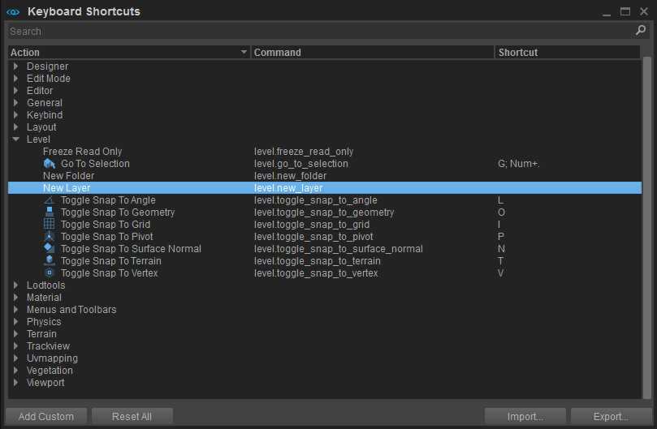
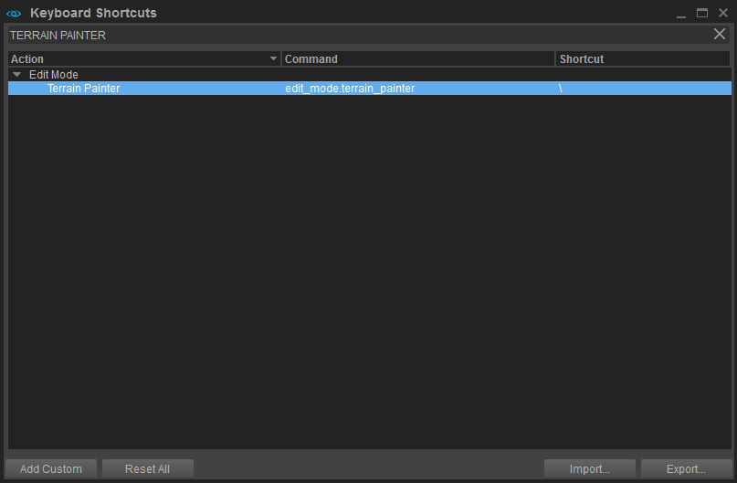
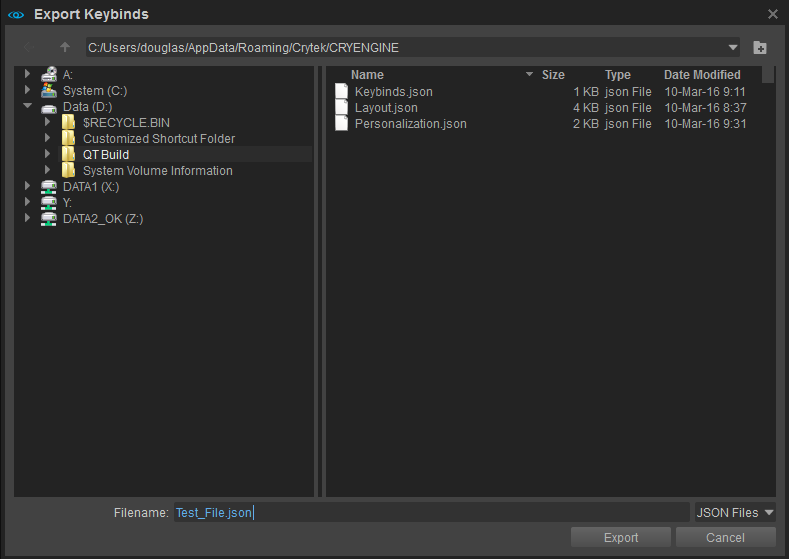
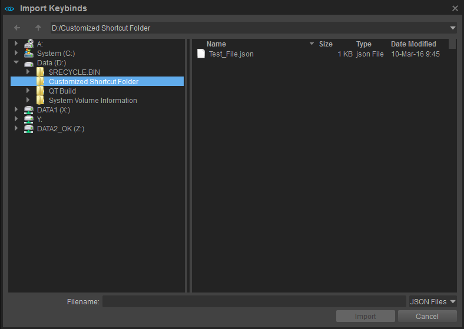

Overview
Although CRYENGINE ships with a default set of keyboard shortcuts, a high level of user customization is still possible to suit project or individual user needs. All customized settings can be returned to default with the Reset All button.
Keyboard Shortcuts Window
Keyboard Shortcuts can be found under Edit -> Keyboard Shortcuts from the Menu Bar of the main Sandbox Editor interface.

Categories within CRYENGINE such as Designer, Edit Mode, Editor, General and Level, are displayed in the Keyboard Shortcuts window. The Actions, Commands and Shortcuts that apply to each category can be made visible/invisible through expandable/collapsible menus - this follows a conventional right pointing arrow to indicate a collapsed set of Actions and a downward pointing arrow to indicate that the Actions are in an expanded state.
In the screenshot above, the Level category has been been expanded to show the respective Actions, Commands and the Keyboard Shortcuts (in this case the default Shortcuts).
Other features found in the window include:
| Feature | Description |
|---|---|
| Search | Alphanumeric user search. |
| Add Custom | Permits the addition of a Custom Command and the respective shortcut assigned by the user. |
| Reset All | Resets shortcuts to the as shipped default condition. |
| Import | Allows a user(s) to import the Keyboard Shortcut settings created/used by another user/saved in a file location. |
| Export | Allows Keyboard Shortcut settings to be exported for sharing with other users. |
Customization
Customization is very easy to achieve and gives individual users and Leads great flexibility in changing a default Keyboard Shortcut(s), creating a keyboard shortcut for an Action that has no default setting and/or creating multiple shortcuts for a given Action/Command.
Customizing a Keyboard Shortcut
In the example below we are going to give the Terrain Painter Action a shortcut (there is no default setting for this Action in the as shipped condition).
- Use the Search function to find where the Terrain Painter is located (this is by far the fastest way to find what you are looking for).
- This will identify in which category the Terrain Painter is located in (in our case the Edit Mode category).
- Expand the menu to reveal the Action Terrain Painter, the Command and the default shortcut (none in our case).
- Position your mouse pointer over the Terrain Painter Action so that the text becomes white, then move it right to the far right (under the Shortcut field). Then double-click in the Shortcut field - this will open it and allow editing.
- Add the desired shortcut; in our example we have used the backslash key.
- If you want to add further shortcuts, then first click on the + sign and add your desired shortcut.
- Be careful to not add shortcuts that are already in use! If you add a shortcut already in use then the Action/customized shortcut will be highlighted in red and a conflict message warning will appear when you mouse over the Action .
- The X symbol can be used to remove entries.
Note: It will not undo a customized setting once it has been saved. To remove a customized setting you must click on the Reset All button. - When you have made your selection(s) click on the Terrain Painter title - this will save your change (see screenshot below).

10. Your new customized shortcut is saved to your Keybinds.json file which can be found in your user Appdata folder.
The Appdata folder is a hidden folder. See Restoring Default Settings to learn how to make this folder visible.
Exporting
If you want other users to be able to share your customized Keyboard Shortcuts then you have to create a *.json file and save it - this is the Exporting process.
- Click on the Export button - this opens the Export Keybinds window (see screenshot below).
- Where you save the file is of course dependent on you or your organisation's requirements/rules.
Note: By default the file will be saved in your Appdata folder - In the Filename field, enter a name for your customized Keyboard Shortcut file
- Click the Export button to save the file in the folder that you selected in step 2.

Importing
The importing process allows users to share customized Keyboard Shortcuts that have been created by others or are for use in certain projects only etc. In essence it is a reverse of the Exporting process described above.
- Open the Keyboard Shortcuts window Edit -> Keyboard Shortcuts...
- Click Import - this opens the Import Keybinds window
- Navigate to the folder where the *.json file you want has been saved (see screenshot below)
- Click Import - this will save the file to your Appdata folder

General Notes on Customizing and Saving Files
- Keybinds are currently modifiable through the Keybind Editor located under the Edit -> Keyboard Shortcuts...
- On load, keybinds can be found in one of two places. A keybinds.json file under the user's Appdata or inside the current game project folder under the Keybinds directory. Note: User keybinds will always take precedence over project keybinds.
- Keybind settings can be exported to be shared or used as game project keybinds.
- Importing keybind settings is also supported. Any keybind that is imported will replace the keybinds in the user's Appdata folder (see information above regarding the making the Appdata folder visible).
F-keys
The F-keys on your keyboard have specific functions: some open certain commonly used tools and some perform commonly performed actions:
Key | Description |
|---|---|
| F1 | Opens the CRYENGINE V documentation. Hover this over a tool or panel and if any documentation exists for it, the relevant page will open in your internet browser. |
| F2 | Allows users to rename a selected asset. |
| F3 | Find/find next search result. |
| F4 | Bring the level editor (main viewport + side panels) back into focus. |
| F5 | Jump into game mode. |
| F7 | Export to engine. |
| F11 | Activate full-screen mode. |
| F12 | Take a screenshot of the currently active window. Clicking on the notification that pops up when you take the screenshot will open this folder in the Windows Explorer. |